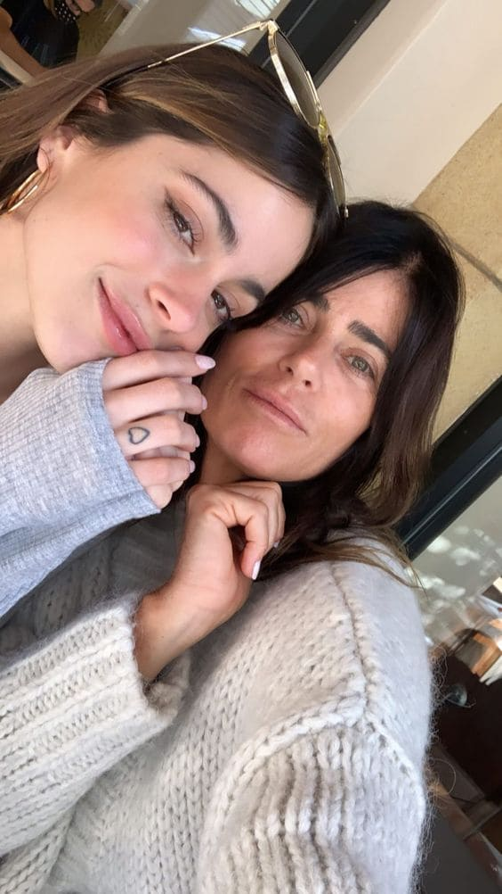

Mariana Muzlera
Mariana Muzlera es quien más acompañó a Tini a lo largo de su carrera, estando junto a ella en giras, mudanzas e importantes decisiones. Además, fue la que la impulsó a formarse desde chiquita, llevándola a clases de danza, teatro y canto.
La mujer de 53 años que tiene mucho estilo y personalidad a la hora de elegir sus looks, inauguró el pasado diciembre su propia marca de bikinis que lleva el nombre de Tierra de pecados. Lo cierto es que la empresaria fue fuertemente criticada por los precios que decidió ponerle a sus productos, que partieron de una base de 10500 pesos.